Spécification fonctionnelle et technique complète — analyse module par module, modèle de données, architecture, sécurité, maturité et feuille de route.
Document de référence pour la réalisation de la vidéo de démonstration et l'intégration du produit.
| Nom affiché dans l'application | IMMOSOLVER — CRM Immobilier |
| Marque exploitante | IMMOSOLVER (sidebar et profil administrateur) |
| Nom du dossier et du domaine | ImmoSolver — immosolver.store |
| Mode d'exploitation | Application installée localement sur la tablette ou le mobile de l'agent (PWA), utilisée en visite et en rendez-vous ; les données de travail restent sur l'appareil |
| Entrée des biens | WhatsApp : l'agent de terrain envoie sa prospection au numéro de l'agence affiché dans l'application ; le bien est créé dans l'app. Tous les autres modules sont alimentés par saisie manuelle |
| Sortie / diffusion | Publication des annonces via Zapier — portails, réseaux sociaux et vitrine |
| Nature | Application web mono-page (SPA), 100 % front-end |
| Métier couvert | Gestion locative, recouvrement des loyers, maintenance, transaction vente, qualification de leads |
| Marché cible | Agences immobilières indépendantes au Maroc — jeu de données et zones centrés sur Tanger |
| Langues | Français (défaut) et arabe, avec bascule complète en direction RTL |
| Stack | React 19.1 · TypeScript 5.8 · Vite 6.3 · TanStack Router 1.121 · Tailwind CSS 4.2 · Zustand 5 · Recharts 2.15 · FullCalendar 6.1 |
| Hébergement | Hostinger — hébergement statique, HTTPS, domaine immosolver.store |
| Persistance | localStorage pour le mode, le thème et les notifications ; état métier en mémoire et store non persisté |
| Authentification | Aucune — profil « Adil M. · Administrateur » décoratif |
| Base de données | Aucune. Client Supabase généré mais importé nulle part |
| Intégrations | WhatsApp par liens wa.me (relances), webhook Zapier (publication), embeds YouTube / Vimeo, photos Unsplash (démonstration) |
| Volumétrie | 84 fichiers source · 10 647 lignes · 10 modules · 9 écrans · 46 composants d'interface |
| État | Démonstrateur avancé et crédible — prêt pour la démonstration, non prêt pour une exploitation réelle sans socle serveur |
Une agence type à Tanger réunit trois à dix agents, un gestionnaire locatif et un dirigeant. Elle suit simultanément des biens à louer, des biens à vendre, des propriétaires bailleurs, des candidats locataires, des acquéreurs et des prestataires. Les annonces arrivent par WhatsApp, les visites se planifient par téléphone, les loyers se vérifient sur des relevés bancaires et les contrats s'impriment chez le notaire ou dans un cabinet.
Le résultat est prévisible : l'information est fragmentée, les relances dépendent de la mémoire, les leads refroidissent et le dirigeant ne dispose d'aucune vue consolidée sans demander un tableau à quelqu'un. Le problème n'est pas l'absence de logiciel — c'est que les logiciels existants sont soit comptables, soit américains, soit trop lourds pour une agence de terrain.
L'unité de travail n'est pas le bureau : c'est la tablette que l'agent emporte en visite. ImmoSolver doit donc s'installer localement sur l'appareil, s'ouvrir comme une application et rester utilisable quand le réseau est incertain. Le modèle d'exploitation tient en trois gestes.
L'application s'installe sur la tablette ou le mobile (PWA : manifeste, service worker, écran d'accueil). Elle démarre en plein écran, sans barre d'URL, et conserve les données de travail sur l'appareil.
Le numéro WhatsApp de l'agence est affiché dans l'application. En visite, l'agent y envoie sa prospection — photos, adresse, surface, prix, contact. Le message crée un bien dans l'application ; le reste du CRM se saisit à la main.
La publication est la porte de sortie : un bien validé part par Zapier vers les portails, les réseaux sociaux et la vitrine, sans double saisie ni copier-coller.
Cette chaîne fixe le périmètre : WhatsApp est le canal d'entrée des biens, Zapier le canal de sortie des annonces. Les locataires, paiements, contrats et tickets restent des saisies manuelles dans l'application.
| Douleur observée | Conséquence opérationnelle | Réponse dans ImmoSolver |
|---|---|---|
| Biens dispersés entre WhatsApp, Excel et la boîte mail | Doubles saisies, annonces obsolètes, impossibilité de répondre vite à un client | Portefeuille unique, recherchable, avec photos, vidéo, statut et référence stable |
| Loyers suivis de mémoire | Retards détectés trop tard, impayés qui s'accumulent, relation dégradée | Statuts de paiement, totaux attendus / perçus / restants, relance WhatsApp contextualisée |
| Contrats imprimés puis scannés | Allers-retours, signatures manquantes, archivage approximatif | Quatre modèles de contrats, signature au doigt ou au stylet, aperçu imprimable |
| Leads perdus dans les conversations | Opportunités non qualifiées, mandats manqués | Le Radar : file d'entrée, aperçu, publication au portefeuille ou rejet motivé |
| Maintenance non tracée | Coûts subis, prestataires non comparés, propriétaires mécontents | Tickets catégorisés, priorités, prestataire, coût, rappels de charges |
« Une agence immobilière tient dans un onglet. » La promesse n'est pas d'automatiser le métier, mais de réunir dans un même geste ce qui est aujourd'hui éparpillé : le bien, le client, le contrat, le loyer et l'incident. Le produit ne remplace ni le notaire, ni le comptable, ni le terrain — il remplace la dispersion.
La location et la vente partagent la même base. Le mode change le vocabulaire, la navigation et les contrats — jamais les données.
Chaque écran répond à une action concrète : publier un bien, relancer un loyer, signer un bail, clôturer un ticket.
Beaucoup d'information, mais une hiérarchie claire : indicateurs, puis liste, puis fiche. Jamais de tableau inextricable.
Zones réelles, MAD, CIN, WhatsApp, prénoms et usages marocains. Le produit n'est pas un template traduit.
Un build statique, un CDN, un domaine. Coût d'exploitation quasi nul et déploiement en quelques secondes.
Les fonctions inachevées sont assumées : la vitrine annonce « Phase 2 », la signature n'est pas survendue comme qualifiée.
| Persona | Objectif principal | Ce qu'il fait dans l'outil | Ce qu'il attend |
|---|---|---|---|
| Agent commercial Yassine, 29 ans | Transformer un contact en mandat puis en vente ou location | Radar, portefeuille, fiche bien, contrats de vente, agenda | Saisir vite depuis le téléphone, retrouver un bien en deux secondes, ne pas perdre un lead |
| Gestionnaire locatif Salma, 36 ans | Encaisser les loyers et traiter les incidents | Paiements, locataires, maintenance, rappels de charges | Voir les impayés du mois, relancer sans rédiger, savoir quel prestataire est intervenu |
| Dirigeant d'agence Adil, 45 ans | Piloter l'activité sans attendre un reporting | Tableau de bord, analytique, contrats, portefeuille | Une vue fiable du chiffre, des zones faibles et des contrats à renouveler |
| Propriétaire bailleur M. El Idrissi | Savoir que son bien est suivi et que son loyer est encaissé | Indirectement — via les documents et messages de l'agence | De la transparence sur les loyers, les charges et les interventions |
| Capacité | Agent | Gestionnaire | Dirigeant | État réel dans l'application |
|---|---|---|---|---|
| Consulter le portefeuille | Oui | Oui | Oui | Ouvert à tous |
| Créer / modifier un bien | Oui | Non | Oui | Ouvert à tous |
| Voir les données personnelles (CIN) | Limité | Oui | Oui | Ouvert à tous |
| Encaisser / marquer un loyer payé | Non | Oui | Oui | Ouvert à tous |
| Signer un contrat | Oui | Oui | Oui | Ouvert à tous |
| Supprimer un bien ou un locataire | Non | Non | Oui | Ouvert à tous |
| Accéder à l'analytique et aux marges | Non | Non | Oui | Ouvert à tous |
| # | Module | Route | Mode | Maturité | Dépend de |
|---|---|---|---|---|---|
| 01 | Tableau de bord | / | Les deux | Complet | Agenda, graphiques, KPI |
| 02 | Portefeuille de biens | /portefeuille | Les deux | Complet | Store portefeuille, photos, vidéo |
| 03 | Fiche bien et médias | /portefeuille | Les deux | Complet | Module 02 |
| 04 | Locataires et clients | /locataires | Location | Complet | État local, formulaire dédié |
| 05 | Paiements et impayés | /paiements | Location | Complet | Locataires, biens, WhatsApp |
| 06 | Contrats et signature | /contrats | Les deux | Complet | Biens, parties, signature canvas |
| 07 | Maintenance et charges | /maintenance | Location | Complet | Biens, prestataires |
| 08 | Le Radar | /radar | Partagé | Fonctionnel | Portefeuille, Zapier |
| 09 | Analytique et performance | /analytique | Les deux | Partiel | Données agrégées de démonstration |
| 10 | Système et navigation | Transverse | Les deux | Complet | i18n, thème, notifications |
Tableau de bord · Portefeuille Location · Locataires · Paiements · Contrats · Maintenance · Analytique · Le Radar · Vitrine publique
Les contrats sont des baux et des mandats de gestion. Le vocabulaire parle de loyers, de locataires et d'occupation.
Tableau de bord · Portefeuille Vente · Contrats de Vente · Analytique & Ads · Le Radar · Vitrine publique
Les entrées locataires, paiements et maintenance disparaissent. Les contrats deviennent engagements de vente et compromis. L'analytique s'annonce comme un suivi de campagnes.
| Élément | Mode Locatif | Mode Vente |
|---|---|---|
| Navigation | 7 entrées + vitrine | 4 entrées métier + vitrine |
| Vocabulaire des biens | Loyer, disponibilité, occupation | Prix, statut de commercialisation |
| Contrats proposés | Bail, mandat de gestion | Engagement de vente, compromis |
| Indicateurs | Revenus, impayés, occupation | Volume, marge, performance des annonces |
| Modules masqués | Aucun | Locataires, paiements, maintenance |
| Données | Identiques — même portefeuille, mêmes biens, aucune duplication | |
Le tableau de bord répond à la question du matin : « où en est l'agence ? ». Il combine quatre indicateurs de synthèse, un agenda opérationnel et deux graphiques : évolution des revenus sur six mois et taux d'occupation par quartier. C'est l'écran le plus dense du produit et celui qui porte la première impression lors d'une démonstration.
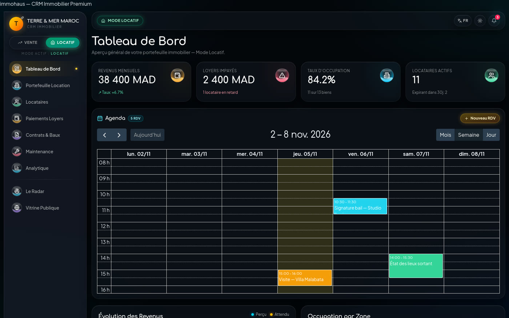
Le portefeuille est le cœur du produit. Il affiche les biens en grille de cartes ou en tableau, avec une recherche instantanée et un filtre par statut. Chaque carte ouvre une fiche latérale complète : carrousel photo, caractéristiques, description, statut, édition sur place et suppression confirmée. La même liste sert la location et la vente.
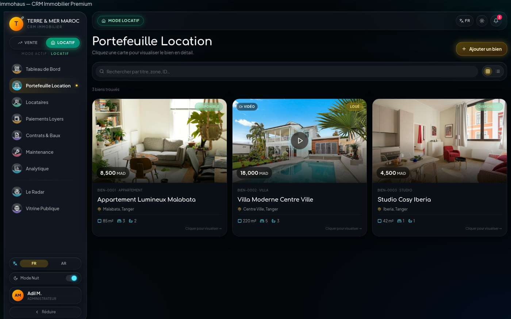
| id | BIEN-XXXX, généré |
| title | Titre commercial |
| type | Appartement, Villa, Studio… |
| zone | Quartier + ville |
| surface / rooms / baths | Nombres entiers |
| price | Loyer ou prix, en MAD |
| status | Disponible · Loué · Vendu |
| photos[] | URLs d'images |
| videoUrl | URL d'embed, optionnelle |
| description | Texte libre |
La fiche bien est le point de convergence entre l'agent, le propriétaire et l'acquéreur. Elle reprend le carrousel photo, la vidéo de visite, la description, le prix, le statut et les actions rapides. C'est l'écran à privilégier dans une vidéo de démonstration : il montre en quelques secondes la promesse « tout est au même endroit ».
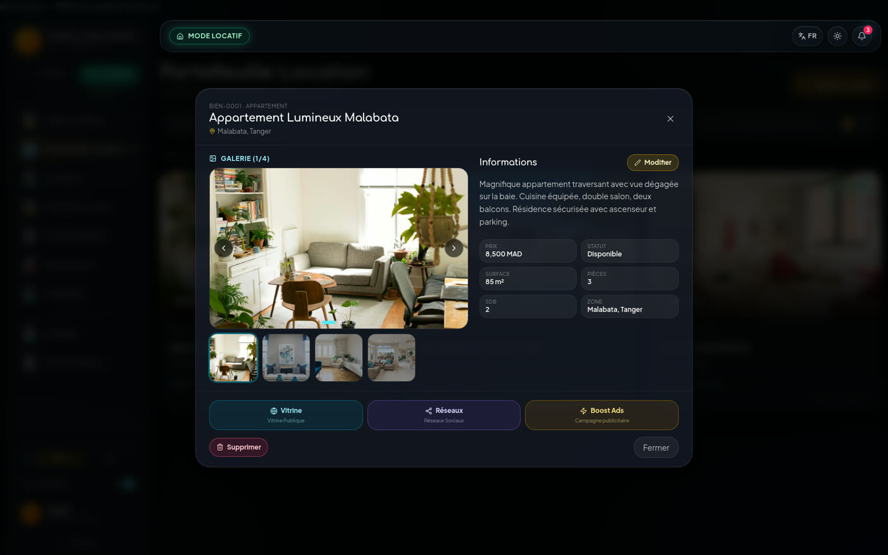
Chaque locataire dispose d'un dossier structuré : identité marocaine, coordonnées, profession, nationalité, contact d'urgence, bien assigné, notes internes et score de fiabilité. La recherche couvre le nom, la CIN et le téléphone ; les filtres séparent les actifs, les inactifs et les archivés. C'est le module qui donne au produit sa crédibilité métier locale.
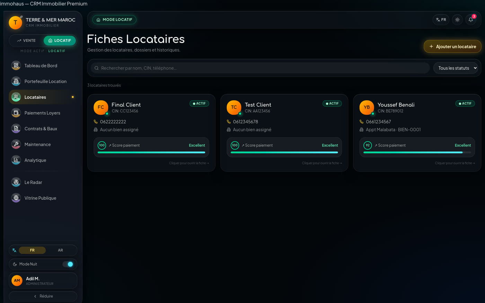
| name / initials | Identité et avatar |
| cin | Carte d'identité nationale |
| phone / email | Coordonnées |
| profession / nationality | Situation |
| status | Actif · Inactif · Archivé |
| score | Fiabilité perçue, 0–100 |
| property | Référence du bien assigné |
| notes | Commentaire interne |
Le module des paiements transforme le suivi des loyers en une file d'actions. Trois totaux synthétiques donnent la situation du mois — attendu, collecté, reste dû — puis chaque ligne porte un statut, un mode de paiement et une action de relance WhatsApp pré-remplie. Le gestionnaire traite un impayé en deux clics.
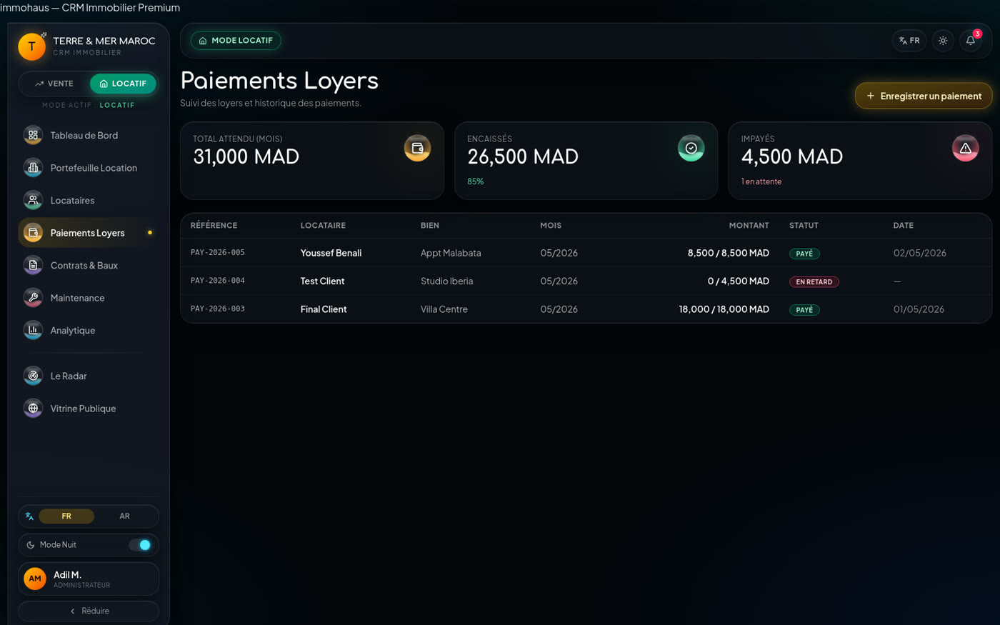
| ref | PAY-2026-XXX |
| tenant | Locataire concerné |
| property | Bien concerné |
| month | MM/AAAA |
| amount / paid | Attendu / encaissé |
| status | 5 états métier |
| date | Date d'encaissement |
| mode | Virement, chèque, espèces, carte |
C'est le module le plus différenciant. Quatre types de contrats sont proposés selon le mode : bail et mandat de gestion en location ; engagement de vente et compromis en vente. Le cycle de vie va du brouillon à l'archivage, avec une étape d'envoi. La signature est capturée au doigt, au stylet ou à la souris, stockée avec le contrat et injectée dans un aperçu imprimable.
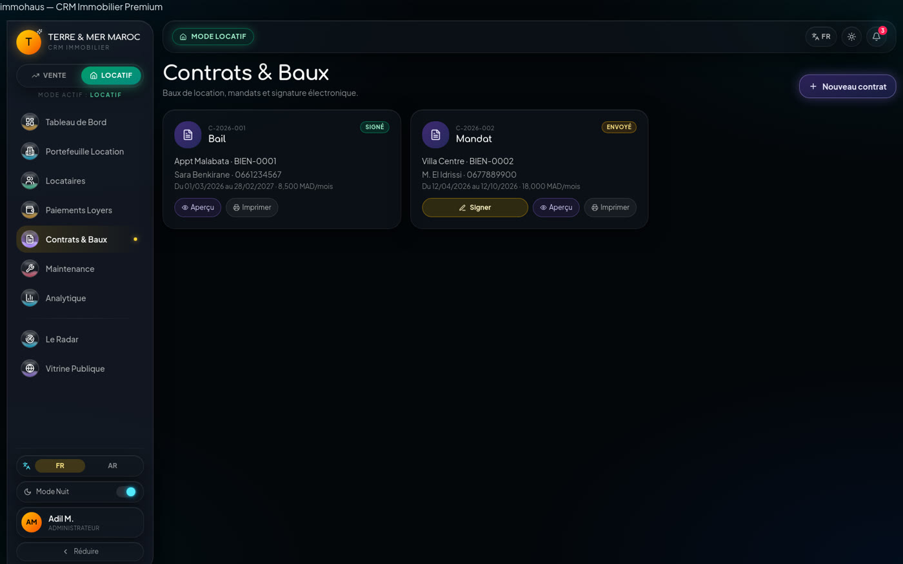
| id / kind | C-2026-XXX · 4 types |
| property / party | Bien et cocontractant |
| partyPhone / partyCIN | Coordonnées et identité |
| start / end | Dates de validité |
| rent / price | Loyer ou prix de vente |
| commission | Pourcentage de commission |
| status | 4 états du cycle de vie |
| signature | Image data-URL du tracé |
Deux onglets complémentaires. Les tickets d'intervention suivent une panne de l'ouverture à la résolution, avec catégorie, priorité, prestataire et coût. Les rappels de charges anticipent les échéances d'électricité, d'eau et de gaz, avec un jour mensuel et un marquage « payé ». Le module donne au gestionnaire une vision complète du coût d'exploitation.
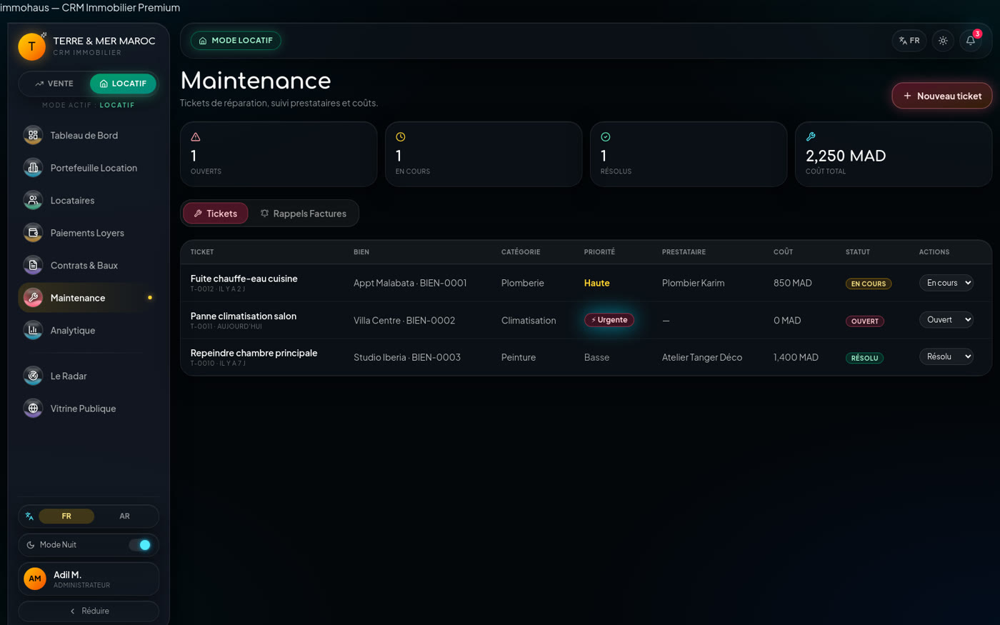
Le Radar est le sas d'entrée des opportunités. Il distingue les annonces de propriétaires et les demandes de clients, majoritairement reçues par WhatsApp. Chaque lead est présenté comme une carte avec photo, type, intention location ou vente, prix, ville, surface et source. L'agent ouvre un aperçu, vérifie les informations, puis publie le bien au portefeuille ou rejette le lead.
Le flux cible. Le numéro WhatsApp de l'agence est affiché dans l'application. L'agent de terrain y envoie sa prospection ; un webhook Meta Cloud API transforme le message en lead dans Le Radar, avec les photos et les champs disponibles. L'agent qualifie, corrige si besoin, puis publie : le bien apparaît au portefeuille. C'est le seul flux qui crée automatiquement une donnée métier — tout le reste est saisi manuellement.
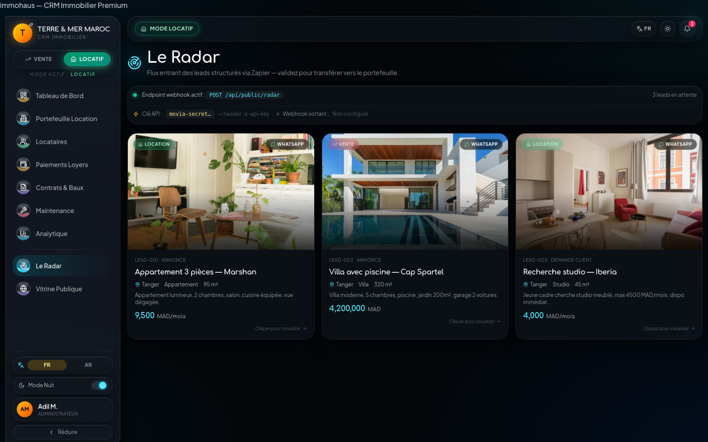
Le module analytique compare les revenus perçus aux revenus attendus sur six mois et mesure la tension locative par quartier. En mode vente, il devient le tableau de bord des campagnes publicitaires. L'intention est claire : donner au dirigeant une lecture immédiate des zones sous-performantes et des écarts de recouvrement.
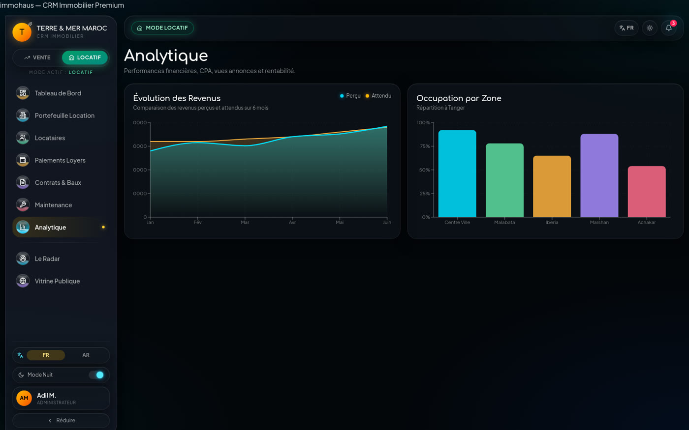
Ce module transverse n'apparaît pas dans le menu mais conditionne toute l'expérience : sidebar repliable avec icônes liquides, sélecteur de mode, centre de notifications, bascule nuit / jour, changement de langue avec passage complet en RTL et profil administrateur. C'est ce qui différencie un prototype d'un produit utilisable au quotidien.
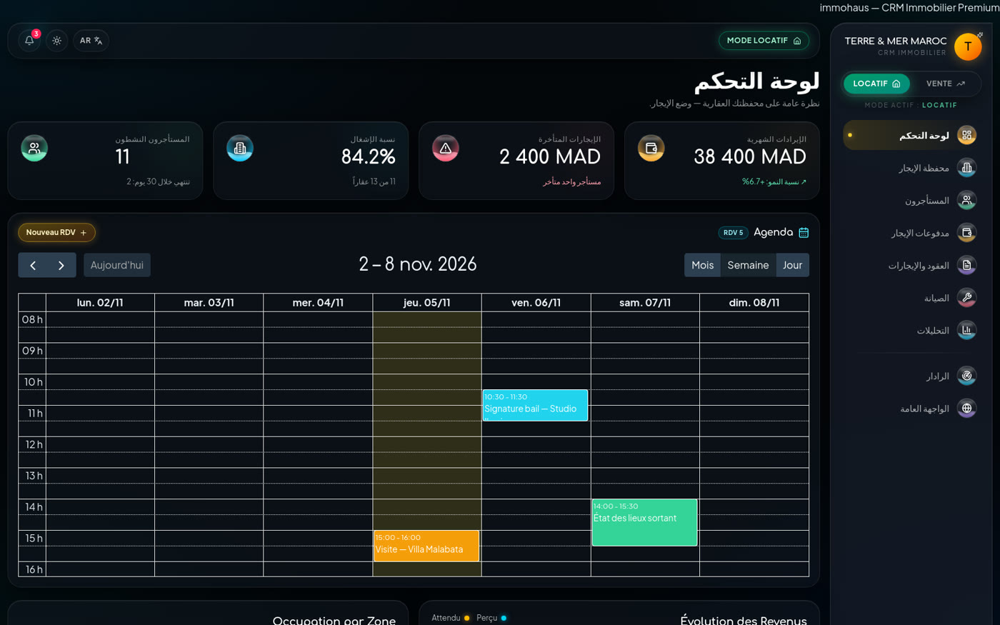
| # | Écran | Action | Résultat attendu |
|---|---|---|---|
| 1 | Le Radar | Ouvrir un lead « Villa avec piscine — Cap Spartel » | L'aperçu affiche prix, surface, ville, intention et description |
| 2 | Le Radar | Vérifier la cohérence puis cliquer sur « Publier » | Le bien est créé au portefeuille avec une référence BIEN-XXXX |
| 3 | Portefeuille | Enrichir la fiche : photos, description, statut | La fiche est complète et recherchable |
| 4 | Contrats de vente | Créer un engagement de vente avec prix et commission | Le contrat apparaît en brouillon |
| 5 | Contrats | Faire signer à l'écran puis archiver | Le statut passe à « Signé » et la signature est visible |
| # | Écran | Action | Résultat attendu |
|---|---|---|---|
| 1 | Paiements | Lire les totaux attendu / collecté / reste dû | Les impayés du mois sont identifiés |
| 2 | Paiements | Ouvrir la ligne « En retard » et cliquer sur WhatsApp | Un message contextualisé est prêt à envoyer |
| 3 | Paiements | Passer le statut à « Payé » après encaissement | Les totaux se recalculent, la ligne sort des alertes |
| 4 | Maintenance | Créer un ticket « Fuite chauffe-eau », priorité haute | Le ticket apparaît en « Ouvert » avec le bien concerné |
| 5 | Maintenance | Renseigner le prestataire, le coût, puis résoudre | Le coût entre dans le cumul d'exploitation |
| # | Écran | Action | Résultat attendu |
|---|---|---|---|
| 1 | Tableau de bord | Lire les quatre KPI et l'agenda du jour | La situation générale est comprise en moins de trente secondes |
| 2 | Analytique | Repérer la zone la moins occupée | Une décision commerciale peut être prise (prix, campagne) |
| 3 | Contrats | Identifier les baux qui expirent | Les renouvellements sont planifiés |
| 4 | Portefeuille | Comparer les biens disponibles et loués | Le stock réel est visible |
Les relations ci-dessus sont logiques. Dans le code, les entités ne sont pas reliées par des identifiants étrangers typés : les contrats, paiements et tickets stockent le nom du bien ou du locataire sous forme de chaîne. Aucune intégrité référentielle n'est garantie.
| Champ | Type | Obligatoire | Règle / observation |
|---|---|---|---|
| id | string | Oui | Format BIEN-0001, généré à la création |
| title | string | Oui | Titre commercial libre |
| type | string | Oui | Appartement, Villa, Studio, etc. |
| zone | string | Oui | Quartier et ville |
| surface | number | Oui | Mètres carrés |
| rooms / baths | number | Non | Chambres et salles de bain |
| price | number | Oui | Loyer ou prix en MAD, sans devise ni décimales |
| status | union | Oui | Disponible · Loué · Vendu |
| photos | string[] | Non | URLs distantes, pas de fichier local |
| videoUrl | string | Non | URL d'embed YouTube ou Vimeo |
| description | string | Non | Texte libre |
| address | — | — | Présent au formulaire, absent du type : perdu à l'enregistrement |
| amenities | — | — | Sélectionnés au formulaire, non persistés |
| Entité | Champs principaux | États / contraintes |
|---|---|---|
| Tenant | name, initials, cin, phone, email, profession, nationality, status, score, property, notes | Actif · Inactif · Archivé ; score 0–100 |
| Payment | ref, tenant, property, month, amount, paid, status, date, mode, archived | Payé · En attente · Partiel · En retard · Archivé |
| Contract | id, kind, property, party, partyPhone, partyCIN, ownerName, ownerPhone, start, end, rent, price, commission, status, signature, notes | Brouillon · Envoyé · Signé · Archivé ; 4 types |
| Ticket | id, title, property, category, priority, status, provider, cost, createdAt | Ouvert · En cours · Résolu ; 4 priorités ; 6 catégories |
| BillReminder | id, property, type, dueDay, paid, createdAt | Électricité · Eau · Gaz ; jour 1–31 ; payé oui/non |
| Lead | id, type, intent, title, price, city, propertyType, surface, source, image, description | Annonce · Demande ; location · vente |
| Notification | id, title, body, kind, link, read, createdAt | Info · Succès · Avertissement · Danger |
| Store / mécanisme | Contenu | Persisté | Clé |
|---|---|---|---|
| portfolioStore | Biens, photos, vidéo, prix, statut | Non | — |
| modeStore | Mode vente / locatif | Oui | movia-mode |
| themeStore | Thème nuit / jour | Oui | movia-theme |
| notificationStore | Notifications et état de lecture | Oui | movia-notifications |
| Langue | Français / arabe | Oui | movia-lang |
| useState local | Locataires, paiements, contrats, tickets, charges, leads, agenda | Non | — |
| ID | Anomalie | Impact | Correction recommandée |
|---|---|---|---|
| A1 | Adresse du bien collectée mais absente du type PropertyData | Perte de donnée | Ajouter address au type et au payload de création |
| A2 | Équipements sélectionnés mais non enregistrés | Perte de donnée | Ajouter amenities: string[] |
| A3 | Pas de clé étrangère : bien et locataire stockés par nom | Incohérence | Utiliser des identifiants stables et des jointures |
| A4 | Portefeuille non persisté | Perte totale | Persister ou migrer vers une API |
| A5 | Table locataire dupliquée dans les paiements | Désynchronisation | Lire la source unique du store locataires |
| A6 | Montants sans devise ni précision | Ambiguïté | Stocker en centimes + code devise MAD |
| A7 | Dates en chaînes locales | Tri et calculs | Stocker en ISO 8601 UTC |
| Dépendance | Version | Rôle dans le produit |
|---|---|---|
| react / react-dom | 19.1 | Rendu de l'interface |
| typescript | 5.8.3 | Typage strict (strict: true) |
| vite | 6.3.5 | Build et serveur de développement |
| @tanstack/react-router | 1.121 | Routage typé et découpage par route |
| tailwindcss | 4.2.1 | Design system par tokens |
| zustand | 5.0.13 | Stores globaux et persistance |
| recharts | 2.15.4 | Graphiques du tableau de bord et de l'analytique |
| @fullcalendar/react | 6.1.20 | Agenda opérationnel |
| react-signature-canvas | 1.1.0-alpha.2 | Capture de signature |
| react-i18next / i18next | 17.0 / 26.0 | Bilingue français / arabe |
| @supabase/supabase-js | 2.105.4 | Présent mais non importé — dette à supprimer |
| zod | 3.24 | Présent mais peu utilisé côté formulaires |
| Dossier | Fichiers | Lignes | Contenu |
|---|---|---|---|
| src/routes | 10 | 2 861 | Les 9 écrans et le layout racine |
| src/components/ui | 46 | 4 360 | Bibliothèque shadcn/ui adaptée au thème |
| src/components/layout | 8 | 650 | Sidebar, topbar, switches, notifications |
| src/components/dashboard | 4 | 559 | KPI, revenus, occupation, agenda |
| src/components/properties | 1 | 303 | Dialogue de création de bien |
| src/components/tenants | 1 | 164 | Dialogue de création de locataire |
| src/store | 4 | 180 | Mode, thème, notifications, portefeuille |
| src/lib | 3 | 360 | i18n, Zapier, utilitaires |
| Total mesuré | 84 | 10 647 | Y compris point d'entrée, routeur, styles |
| Indicateur | Valeur | Commentaire |
|---|---|---|
| Poids JavaScript | 1,33 Mo · 382 Ko gzip | Acceptable sur fibre, perfectible en 4G |
| Poids CSS | 140 Ko | Tailwind 4 génère uniquement les classes utilisées |
| Découpage par route | Absent | Le premier chargement paie tout le produit |
| Navigation interne | < 1 s | Routage client, pas de rechargement réseau |
| Dépendance serveur | Aucune | Latence limitée au CDN Hostinger |
| Cache | CDN + empreinte de fichier | Les assets sont versionnés par hash |
| Token | Valeur OKLCH | Équivalent | Usage |
|---|---|---|---|
| --background | oklch(0.13 0.02 250) | ≈ #0B0F17 | Fond général sombre |
| --foreground | oklch(0.96 0.01 240) | ≈ #F2F5F9 | Texte principal |
| --card | oklch(0.18 0.025 250) | ≈ #141B28 | Surfaces de cartes |
| --primary / --cyan | oklch(0.82 0.18 210) | ≈ #3CE0FF | Action, focus, liens |
| --accent | oklch(0.78 0.16 80) | ≈ #F0B64F | Valeur, loyers, mise en avant |
| --muted-foreground | oklch(0.70 0.02 240) | ≈ #A3B0C2 | Texte secondaire |
| --border | oklch(1 0 0 / 8%) | blanc 8 % | Séparateurs et contours |
| --radius | 0.875rem | 14 px | Rayon de base, décliné de 10 à 26 px |
Fond rgba(18,22,32,.55), flou 20 px, saturation 140 %, bordure blanche 8 %, ombre portée profonde. Utilisé pour les cartes, la sidebar et les panneaux secondaires.
Fond rgba(22,28,40,.78), flou 28 px, saturation 160 %. Réservé aux dialogues, aux panneaux latéraux et aux éléments qui doivent rester lisibles au-dessus du contenu.
Élévation au survol (−2 px), halo cyan à 18 %, transitions de 150 à 400 ms. Sept animations déclarées : float, wave, shimmer, glow-pulse, fade-in, scale-in, ripple.
Le thème clair inverse les tokens de fond et de texte, mais conserve les surfaces vitrées pour préserver l'identité. La bascule est persistée sous movia-theme.
| Rôle | Famille | Usage |
|---|---|---|
| Display | Comfortaa | Titres de page, chiffres clés, marque |
| Texte | Plus Jakarta Sans | Interface, formulaires, tableaux |
| Technique | Monospace système | Références, montants, routes |
Accordion, alert, avatar, badge, button, calendar, card, carousel, chart, checkbox, command, dialog, drawer, dropdown, form, input, menubar, pagination, popover, progress, radio, scroll-area, select, separator, sheet, sidebar, skeleton, slider, switch, table, tabs, textarea, toast, tooltip, etc.
AppShell, Sidebar, Topbar, LanguageSwitcher, ModeSwitcher, ThemeToggle, NotificationsBell, LiquidIcon.
StatCard, RevenueChart, OccupancyChart, AgendaCalendar — plus les deux dialogues de création (bien, locataire).
| Langue | Code | Direction | Namespaces |
|---|---|---|---|
| Français | fr | ltr | 15 namespaces : app, nav, mode, theme, common, dashboard, portfolio, tenants, payments, contracts, maintenance, analytics, agenda, radar, zapier |
| Arabe | ar | rtl |
Le fichier src/lib/i18n.ts contient les deux dictionnaires (118 entrées de premier niveau, plusieurs avec des sous-clés), initialise i18next avec le français en repli et expose une fonction setLanguage() qui met à jour document.documentElement.dir et lang, puis mémorise le choix dans localStorage.
L'application n'a ni serveur applicatif, ni base de données, ni endpoint d'authentification. La surface exposée se limite au bundle JavaScript, au stockage local du navigateur et aux appels sortants vers des domaines tiers (Unsplash, YouTube, Vimeo, Zapier). Cela réduit fortement le risque d'intrusion serveur, mais déplace le problème : les données sensibles sont stockées en clair chez l'utilisateur et accessibles à quiconque ouvre la page.
| ID | Risque | Sévérité | Impact | Mesure recommandée |
|---|---|---|---|---|
| R1 | Aucune authentification | Critique | Accès total à l'interface et aux données pour toute personne ayant l'URL | Supabase Auth ou Clerk, session obligatoire, rôles |
| R2 | Données personnelles en clair dans localStorage | Élevé | CIN, téléphones et adresses lisibles via les outils du navigateur | Persistance serveur chiffrée, RLS, purge locale |
| R3 | Clé API de démonstration dans le bundle | Moyen | movia-secret-2026 visible par quiconque inspecte le JavaScript | Supprimer la valeur de repli, déplacer les secrets côté serveur |
| R4 | Absence de sauvegarde | Élevé | Perte définitive au vidage du cache ou au changement d'appareil | Sauvegarde serveur, export, rétention |
| R5 | Signature non qualifiée | Moyen | Valeur probante limitée en cas de litige | Prestataire de signature certifiée, horodatage, piste d'audit |
| R6 | Absence d'en-têtes de sécurité | Moyen | Pas de CSP, HSTS, X-Frame-Options explicites | Configurer les en-têtes côté hébergeur |
| R7 | URL de webhook Zapier exposée au build | Faible | Un tiers pourrait déclencher l'automate s'il la découvre | Relayer par un endpoint serveur authentifié |
| R8 | Pas de journal d'audit | Moyen | Impossible de savoir qui a modifié quoi | Journaliser les actions côté serveur |
Le produit manipule des données d'identification (nom, CIN, téléphone, e-mail, profession, nationalité) et des données patrimoniales et financières (biens, loyers, impayés). Au Maroc, ces traitements relèvent de la loi 09-08 relative à la protection des personnes physiques à l'égard du traitement des données à caractère personnel, sous le contrôle de la CNDP.
La signature capturée est une image du tracé, associée à un contrat stocké dans le navigateur. Elle constitue tout au plus un élément de preuve visuel. Elle ne répond pas aux exigences d'une signature électronique qualifiée : absence de certificat, d'horodatage fiable, de scellement, de vérification d'identité du signataire et de piste d'audit inaltérable.
| Priorité | Action | Effort estimé |
|---|---|---|
| P0 | Authentification et rôles, session obligatoire | 3–5 jours |
| P0 | Migration des données vers PostgreSQL avec RLS | 5–8 jours |
| P0 | Suppression de la clé API de repli et du client Supabase inutilisé | 1 heure |
| P1 | En-têtes de sécurité et CSP sur l'hébergement | 2 heures |
| P1 | Masquage de la CIN et journal d'audit | 2 jours |
| P1 | Politique de conservation et export des données | 2 jours |
| Module | Note | État | Points forts | Ce qui manque |
|---|---|---|---|---|
| Tableau de bord | 4 / 5 | Complet | KPI, agenda, deux graphiques, hiérarchie claire | Indicateurs calculés depuis les données réelles |
| Portefeuille | 4 / 5 | Complet | CRUD, recherche, grille/tableau, photos, vidéo | Persistance, téléversement de fichiers, adresse et équipements |
| Fiche bien | 4 / 5 | Complet | Carrousel, édition en place, partage | Pièces jointes, aperçu public relié à la vitrine |
| Locataires | 4 / 5 | Complet | Dossier riche, CIN, score, filtres, archivage | Documents justificatifs, calcul du score, historique |
| Paiements | 4 / 5 | Complet | Statuts, totaux, relance WhatsApp, modes | Quittances PDF, rapprochement bancaire, source unique locataire |
| Contrats | 4 / 5 | Complet | 4 types, signature, aperçu, cycle de vie | Envoi e-mail, signature qualifiée, modèles juridiques validés |
| Maintenance | 4 / 5 | Complet | Tickets, priorités, coûts, rappels de charges | Photos, devis, planning prestataire, lien comptable |
| Le Radar | 3,5 / 5 | Fonctionnel | Qualification, publication, rejet, webhook | Flux WhatsApp réel, scoring, doublons |
| Analytique | 2 / 5 | Partiel | Deux visualisations soignées, intention claire | Agrégations réelles, ROI, exports, filtres |
| Système | 4 / 5 | Complet | Navigation, FR/AR, RTL, thème, notifications | Authentification, rôles, multi-agences |
| Priorité | Élément | Impact | Effort |
|---|---|---|---|
| P0 | État métier non persisté (biens, locataires, paiements, contrats, tickets) | Bloquant production | Couvert par la phase 1 (5–8 j) |
| P0 | Absence d'authentification et de rôles | Bloquant production | 3–5 j |
| P0 | Pas de manifeste ni de service worker : application non installable, pas de mode hors ligne | Bloquant terrain | 2–3 j |
| P0 | Aucun webhook WhatsApp entrant : les biens ne peuvent pas être créés depuis le terrain | Bloquant acquisition | 3–4 j |
| P1 | Publication Zapier non branchée sur les biens publiés | Sortie manuelle | 2 j |
| P0 | Données personnelles en clair dans le navigateur | Risque juridique | Inclus dans la migration |
| P1 | Données de démonstration codées en dur dans les composants | Maintenance | 2–3 j |
| P1 | Adresse et équipements non persistés | Perte de donnée | 0,5 j |
| P1 | Table locataire dupliquée dans les paiements | Cohérence | 0,5 j |
| P1 | Client Supabase et clé API de repli inutilisés | Sécurité / poids | 1 h |
| P2 | Absence de tests automatisés et d'intégration continue | Qualité | 3–4 j pour un socle |
| P2 | Pas de découpage par route | Performance | 1–2 j |
| P2 | Pas de validation de schéma runtime sur les formulaires | Robustesse | 2 j |
| P2 | Libellés métier non traduits en arabe | Finition i18n | 1–2 j |
| Lot | Livrables | Critère d'acceptation |
|---|---|---|
| Installation locale (PWA) | Manifeste, service worker, cache applicatif, écran d'accueil, stockage local IndexedDB | L'app s'installe sur tablette et mobile et s'ouvre en plein écran, même hors ligne |
| Entrée WhatsApp des biens | Numéro de l'agence affiché dans l'app, webhook Meta Cloud API, création du bien depuis la prospection de l'agent | Un message envoyé au numéro de l'agence crée un bien dans Le Radar |
| Authentification et rôles | Connexion, session, rôles admin / agent / gestionnaire, écran de profil réel | Un utilisateur non connecté ne voit aucun écran métier |
| Base de données | PostgreSQL, schéma relationnel, Row Level Security, migrations | Les 8 entités sont persistées et cloisonnées par agence |
| API applicative | Endpoints biens, locataires, paiements, contrats, tickets, leads | Les écrans lisent et écrivent via l'API, plus aucun état local métier |
| Stockage de fichiers | Photos, pièces d'identité, documents de contrat | Téléversement, validation de type et de taille, URL signée |
| Documents PDF | Quittances de loyer, contrats imprimables, relevé mensuel | Génération serveur, numérotation, archivage |
| Lot | Livrables | Critère d'acceptation |
|---|---|---|
| Vitrine publique | Site public généré depuis les biens publiés, SEO, partage social | Un bien publié apparaît en ligne sans double saisie |
| Publication Zapier | Zaps de publication vers portails, réseaux sociaux et vitrine | Un bien publié sort sans double saisie |
| Campagnes et ROI | Coût par lead, source, taux de conversion, retour sur investissement | Le dirigeant connaît le coût d'acquisition par canal |
| Notifications | E-mail et push : loyers en retard, contrats à renouveler, nouveau lead | Une alerte part dans les 5 minutes suivant l'événement |
| Signature renforcée | Intégration d'un prestataire certifié, horodatage, piste d'audit | Le contrat produit une preuve vérifiable |
| Lot | Livrables | Critère d'acceptation |
|---|---|---|
| Multi-agences | Organisations, équipes, tableaux consolidés, permissions fines | Chaque agence ne voit que son périmètre |
| Application mobile | React Native ou PWA installable, mode hors ligne pour les visites | Saisie d'un bien et photo depuis le terrain |
| Comptabilité | Rapprochement bancaire, exports comptables, gestion des dépenses | Le comptable exporte un journal mensuel exploitable |
| Intelligence artificielle | Estimation de loyer, tri des leads, résumé de dossier, rédaction d'annonces | Gain mesuré sur au moins un flux métier |
| Conformité et résilience | Sauvegardes, journal d'audit, politique de conservation, conformité 09-08 | Restauration testée et registre des traitements à jour |
| Option | Avantages | Limites | Verdict |
|---|---|---|---|
| Supabase Auth + Postgres + Storage | Mise en route rapide, RLS native, temps réel, coût maîtrisé | Dépendance à un service, logique métier à répartir | Recommandé pour la phase 1 |
| API Node dédiée NestJS ou Fastify + Postgres | Contrôle total, métier centralisé, tests serveur | Plus long à construire, hébergement à opérer | Pertinent à partir de la phase 2 |
| Backend-as-a-service alternatif Firebase, Appwrite | Écosystème mature, temps réel | Modèle de données moins relationnel, coûts moins prévisibles | Possible, moins adapté au métier |
| Domaine | immosolver.store |
| Mode d'exploitation | PWA installée localement sur la tablette ou le mobile de l'agent |
| Entrées / sorties | WhatsApp entrant (API Meta) pour les biens · Zapier sortant pour les publications |
| Type d'hébergement | Hostinger — site statique (type « other ») |
| Racine serveur | /home/u696346042/domains/immosolver.store/public_html |
| Compte | u696346042 · commande 1008432763 |
| HTTPS | Actif, certificat géré par l'hébergeur |
| Assets | Servis par le CDN Hostinger, empreinte de fichier |
| Repli SPA | .htaccess |
| Coût récurrent | Domaine ≈ 120 MAD/an · hébergement mutualisé déjà en compte · 0 serveur |
Le déploiement ne s'arrête pas au domaine : l'application doit s'installer sur l'appareil de chaque agent. La cible est une PWA installable, avec cache applicatif et stockage local, pour un usage en visite même sans réseau.
| Supports | Tablette Android, iPad, téléphone Android / iOS |
| Installation | Ouverture de immosolver.store puis « Ajouter à l'écran d'accueil » — icône, nom, démarrage plein écran |
| Stockage local | IndexedDB pour les biens, photos et saisies en cours ; localStorage pour les préférences |
| Mode hors ligne | Service worker : l'app s'ouvre et les derniers écrans consultés restent disponibles |
| Mise à jour | Nouvelle version servie au lancement, activation après confirmation |
| Sécurité de l'appareil | Verrouillage système, code par agent, effacement à distance en cas de perte |
| Besoin | Outil | Mise en œuvre |
|---|---|---|
| Disponibilité | UptimeRobot ou Better Stack | Contrôle HTTP toutes les 5 minutes sur / et /descriptif/ |
| Erreurs front | Sentry | Initialisation dans le point d'entrée, source maps publiées |
| Audience | Plausible ou Umami | Script léger, sans cookie, conforme par défaut |
| Performance | PageSpeed Insights | Contrôle mensuel mobile et desktop |
| Certificat | Supervision hébergeur | Alerte avant expiration |
| # | Étape | Canal | Résultat attendu |
|---|---|---|---|
| 1 | Prospection terrain | WhatsApp de l'agence | L'agent envoie photos, adresse, surface, prix et contact au numéro affiché dans l'app |
| 2 | Création du bien | Webhook Meta Cloud API → Le Radar | Un lead puis un bien sont créés avec les champs disponibles ; l'agent complète si nécessaire |
| 3 | Saisie manuelle | Application | Locataires, paiements, contrats, maintenance et charges sont saisis par l'équipe |
| 4 | Publication | Zapier | Le bien validé part vers les portails, les réseaux sociaux et la vitrine, sans double saisie |
| Résolution | 1920 × 1080 (16:9), export 1080p |
| Fréquence | 30 images par seconde |
| Codec | H.264, profil High, débit 8 à 12 Mbit/s |
| Audio | AAC 48 kHz, voix normalisée à −16 LUFS, musique à −24 LUFS |
| Durée cible | 2 min 30 (maximum 3 min) |
| Poids | Moins de 200 Mo pour un hébergement direct, ou publication YouTube / Vimeo / Loom |
| Sous-titres | Français incrustés ou piste SRT séparée |
| Cadrage | Navigateur en 1600 × 1000, zoom 100 %, barre d'URL masquée ou propre |
La page /descriptif/ contient un cadre 16:9 responsive avec une iframe de remplacement. Il suffit de remplacer la valeur src="about:blank" par l'URL de la vidéo, puis de supprimer le bloc de substitution visuel.
| Timecode | Écran | Action filmée | Message clé |
|---|---|---|---|
| 0:00–0:08 | Logo / accueil | Fondu depuis le logo vers le tableau de bord | « Voici le poste de pilotage de votre agence. » |
| 0:08–0:22 | Tableau de bord | Survol des KPI, puis de l'agenda | Revenus, impayés, occupation, rendez-vous : tout est visible. |
| 0:22–0:38 | Portefeuille | Recherche « Malabata », ouverture d'une fiche | Un bien se retrouve en quelques lettres. |
| 0:38–0:52 | Fiche bien | Carrousel photo, onglet vidéo, édition | Photos et visite filmée au même endroit. |
| 0:52–1:06 | Paiements | Ouverture d'un impayé, clic WhatsApp | Le loyer en retard devient une action immédiate. |
| 1:06–1:22 | Contrats | Ouverture d'un bail, signature au stylet | Le contrat se signe sans imprimante. |
| 1:22–1:34 | Maintenance | Création d'un ticket, priorité haute | Chaque incident est tracé, chiffré, suivi. |
| 1:34–1:48 | Le Radar | Aperçu d'un lead, clic « Publier » | Un message WhatsApp devient un bien au portefeuille. |
| 1:48–2:00 | Mode vente | Bascule locatif → vente | Un seul outil pour les deux métiers. |
| 2:00–2:12 | Version arabe | Bascule FR → AR, interface en RTL | Pensé pour le marché marocain, jusqu'à la direction de lecture. |
| 2:12–2:22 | Mobile | Vue 430 px, navigation compacte | Utilisable en visite, depuis le téléphone. |
| 2:22–2:30 | Carton final | Logo, URL, mention « démonstration » | « immosolver.store — votre agence dans un onglet. » |
Séquence 1 — Ouverture (0:00–0:08). « Toute agence immobilière vit au rythme de trois questions : quels biens avons-nous, quels loyers rentrent, quels clients attendent une réponse. ImmoSolver réunit les trois dans un seul écran. »
Séquence 2 — Pilotage (0:08–0:22). « Le tableau de bord donne la situation du jour : les revenus, les impayés, le taux d'occupation et l'agenda des visites et des signatures. Sans attendre un rapport, sans ouvrir un tableur. »
Séquence 3 — Patrimoine (0:22–0:52). « Le portefeuille rassemble tous les biens, à louer comme à vendre. Une recherche, et la fiche s'ouvre : photos, surface, prix, description, visite filmée. L'agent a tout sous la main, même en rendez-vous. »
Séquence 4 — Encaissement (0:52–1:06). « Côté gestion, chaque loyer porte un statut. Un impayé apparaît en rouge, et un clic prépare la relance WhatsApp avec le bien, le mois et le montant. Le gestionnaire ne rédige plus, il agit. »
Séquence 5 — Contrat (1:06–1:22). « Le bail est généré, relu, puis signé directement à l'écran, au doigt ou au stylet. La signature reste attachée au contrat, prête à être imprimée ou archivée. »
Séquence 6 — Exploitation et acquisition (1:22–1:48). « La maintenance suit chaque intervention, son prestataire et son coût. Le Radar, lui, transforme les annonces et les demandes reçues sur WhatsApp en biens publiés au portefeuille. »
Séquence 7 — Deux métiers, deux langues (1:48–2:12). « Un commutateur bascule toute l'agence en mode vente : contrats, vocabulaire, indicateurs. Un autre passe l'interface en arabe, avec une mise en page entièrement inversée. »
Séquence 8 — Conclusion (2:12–2:30). « Sur ordinateur comme sur téléphone, ImmoSolver donne à l'agence un seul endroit pour travailler. La démonstration est en ligne sur immosolver.store. »
| Route | Écran | Mode | Contenu principal |
|---|---|---|---|
| / | Tableau de bord | Les deux | KPI, agenda, revenus, occupation |
| /portefeuille | Portefeuille | Les deux | Liste des biens, fiche, création, édition |
| /locataires | Locataires | Location | Dossiers, filtres, scores, archivage |
| /paiements | Paiements | Location | Loyers, statuts, relances, totaux |
| /contrats | Contrats | Les deux | Baux, mandats, engagements, compromis, signature |
| /maintenance | Maintenance | Location | Tickets, priorités, charges |
| /analytique | Analytique | Les deux | Revenus, occupation, performance |
| /radar | Le Radar | Partagé | Leads, qualification, publication |
| /vitrine | Vitrine publique | Partagé | Écran d'attente « Phase 2 » |
| Paquet | Version | Usage |
|---|---|---|
| react / react-dom | 19.1.0 | Interface |
| @tanstack/react-router | 1.121.2 | Routage typé |
| zustand | 5.0.13 | État global |
| tailwindcss | 4.2.1 | Styles utilitaires |
| recharts | 2.15.4 | Graphiques |
| @fullcalendar/react | 6.1.20 | Agenda |
| react-signature-canvas | 1.1.0-alpha.2 | Signature |
| react-i18next | 17.0.7 | Traductions |
| sonner | 2.0.7 | Notifications toast |
| lucide-react | 0.475.0 | Icônes |
| embla-carousel-react | 8.6.0 | Carrousel photo |
| zod | 3.24.2 | Validation (peu utilisée) |
| @supabase/supabase-js | 2.105.4 | Non utilisé |
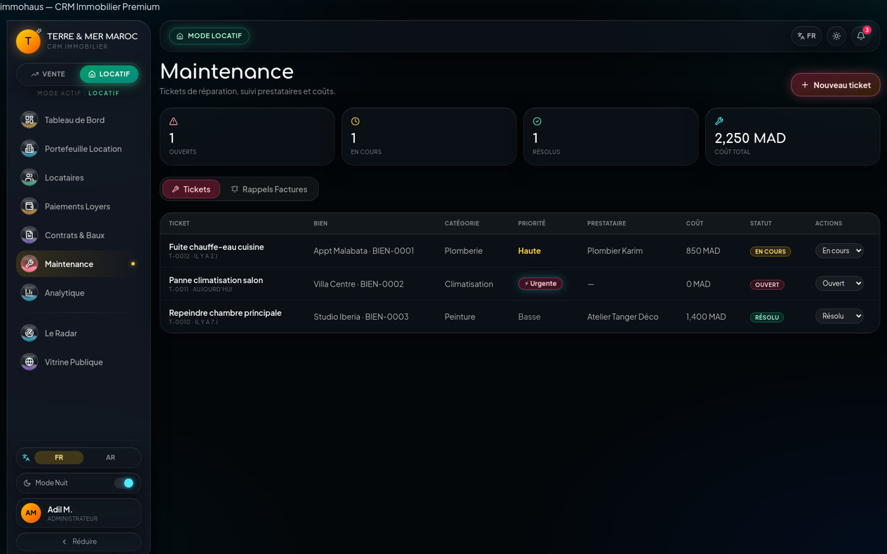
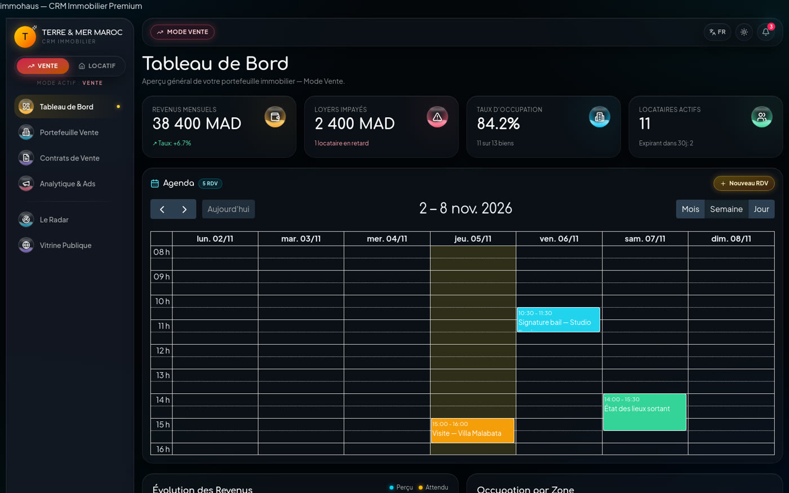
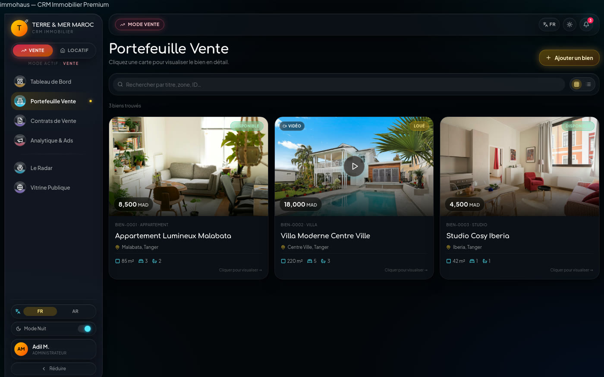
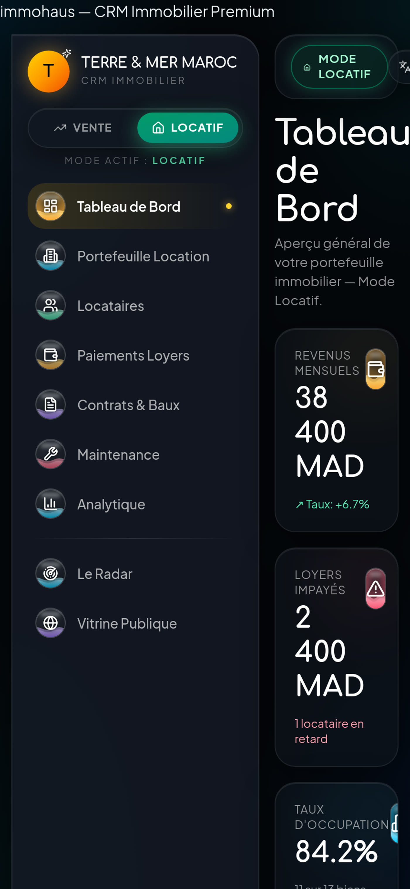
| Terme | Définition dans le contexte du produit |
|---|---|
| Bien | Unité immobilière du portefeuille, identifiée par BIEN-XXXX. |
| Lead | Annonce de propriétaire ou demande de client, avant qualification. |
| Mandat | Contrat autorisant l'agence à gérer un bien ou à le commercialiser. |
| Bail | Contrat de location entre bailleur et locataire. |
| Compromis | Contrat de vente engageant l'acquéreur et le vendeur. |
| Impayé | Loyer attendu non encaissé à l'échéance. |
| Reste dû | Montant attendu moins montant encaissé. |
| Score de fiabilité | Note 0–100 attribuée manuellement à un locataire. |
| RTL | Sens de lecture de droite à gauche, utilisé pour l'arabe. |
| Store | État global Zustand partagé entre les écrans. |
| SPA | Application mono-page : le navigateur change d'écran sans recharger. |
| Phase 2 | Fonction annoncée dans l'interface mais non implémentée. |
| Source analysée | Dépôt movia-glass-os — 84 fichiers, 10 647 lignes |
| Application de référence | https://immosolver.store/ — version déployée le 5 novembre 2026 |
| Méthode | Lecture du code, exécution des parcours, captures sur l'application en production |
| Captures | 14 écrans, 1600 × 1000 (desktop) et 430 × 932 (mobile) |
| Version | 1.0 — finale |
| Date | 5 novembre 2026 |
| Diffusion | Interne — direction, produit, développement, production vidéo |